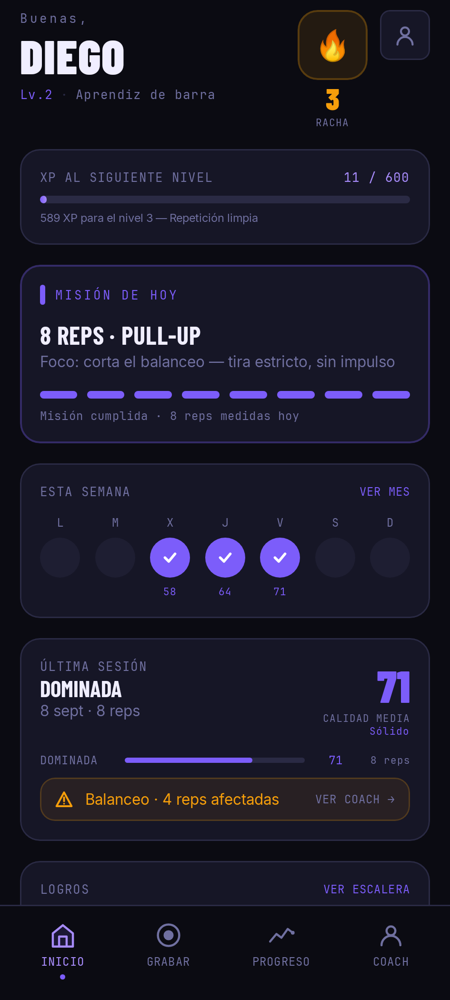
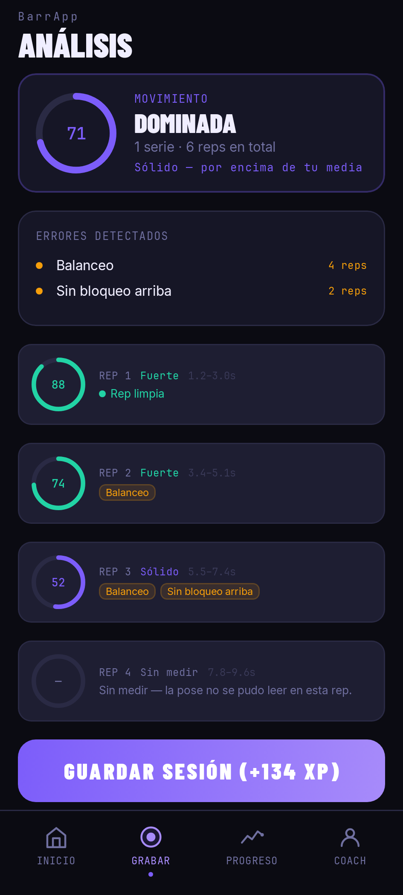

Grabas una serie con el móvil. barrapp reconoce el movimiento, cuenta las repeticiones, puntúa cada una y te señala qué falló — y en qué segundo.
Es una herramienta de medición, no un entrenador que te anima. Si una repetición no se puede leer, lo dice.


Tres pasos. No hace falta ningún sensor, ni una cinta, ni un reloj: solo la cámara que ya llevas encima.
Eliges un clip de tu serie desde el selector del sistema. barrapp no pide permiso de cámara ni acceso a toda tu galería: solo recibe el vídeo que tú eliges.
El clip se analiza en el servidor: se estima la pose, se reconoce el movimiento, se separan las repeticiones y se mide cada una — recorrido, tiempos y los errores de técnica del ejercicio.
Vuelven los números: una puntuación por repetición, los errores con el número de reps afectadas, y el histórico para ver si mejoras o solo entrenas más.
En pruebas internas. barrapp todavía no está publicada de forma abierta en Google Play. Si quieres probarla, escribe a dratencia@gmail.com y te añado a la lista de testers.
In English: barrapp measures calisthenics reps from a video you record. It recognises the movement, counts the reps, scores each one and flags the technique faults it found — and says plainly when a rep could not be read rather than guessing. It is a measurement tool, not a coach, and not a substitute for a professional. Currently in internal testing; email dratencia@gmail.com to join.